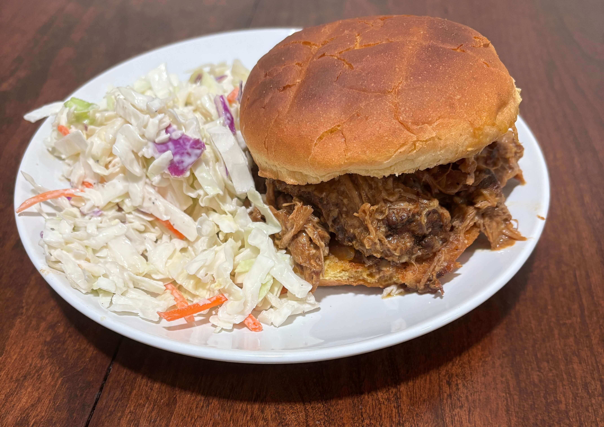

Home
Slow Cooker Pulled Pork

8 servings
Prep: 15 min, Cook: 5 hours
Ingredients
- 1 teaspoon vegetable oil
- 1 (4 pound) pork shoulder roast
- 1 cup barbecue sauce
- ½ cup apple cider vinegar
- ½ cup chicken broth
- ¼ cup light brown sugar
- 1 tablespoon prepared yellow mustard
- 1 tablespoon Worcestershire sauce
- 1 tablespoon chili powder
- 1 extra large onion, chopped
- 2 large cloves garlic, crushed
- 1 ½ teaspoons dried thyme
- 8 hamburger buns, split
- 2 tablespoons butter, or as needed
Steps
- Pour vegetable oil into the bottom of a slow cooker. Place pork roast into the slow cooker; pour in barbecue sauce, vinegar, and chicken broth. Stir in brown sugar, yellow mustard, Worcestershire sauce, chili powder, onion, garlic, and thyme. Cover and cook on Low for 10 to 12 hours or High for 5 to 6 hours until pork shreds easily with a fork.
- Remove pork from the slow cooker, and shred the meat using two forks. Return shredded pork to the slow cooker, and stir to combine with juices.
- Spread the inside of both halves of hamburger buns with butter. Toast buns, butter-side down, in a skillet over medium heat until golden brown. Spoon pulled pork into toasted buns.
Tips
- Keep the butchers twine on so that it holds its shape. Once the pork is cooked and tender snip the loose string off. Remove and discard all string before shredding so you don't accidentally get twine in the dish
- For deeper flavor sear the outside of the roast in a pan with a little oil for 2-3 minutes per side
- You can also shred it in the pot but before shredding use a pair of tongs to remove the layer of fat on top. Any large unmelted chunks of fat or gristle should be thrown away so that the pulled pork doesn't feel too greasy
- You can also use an electric handheld mixer to shred it
- Let the meat sit in the liquid for at least 10-15 minutes before pulling it out for better flavor